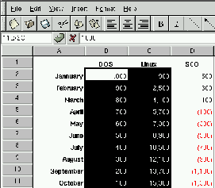

What is Gnumeric
Screenshots
User Manual
Future Gnumeric projects
CORBA and compound documents
Plugin system
Mailing lists
Getting Gnumeric
Reporting Bugs
|
|  |
| gnumeric - The GNOME Spreadsheet |
What is GnumericThe Gnumeric spreadsheet is part of the GNOME desktop environment: a project to create a free, user friendly desktop environment. As every other component of GNOME, Gnumeric is free software and it is licensed under the terms of the GNU GPL.You can see some screenshots of Gnumeric. Breaking news!Gnumeric on the CVS has the printing code merged finally into the HEAD of the CVS. I am polishing the printing code and I will be releasing Gnumeric 0.28 shortly. Stay tuned.
Gnumeric is intended to be a replacement for a commercial spreadsheet, so a lot of effort and work has still to go into it, but I believe we have the right framework to do it. DownloadingYou can download gnumeric from: ftp://ftp.gnome.org/pub/GNOME/sources/gnumericGnumeric announcements:
Future projectsI would like to add support for arbitrary precision arithmetic in the future using the GNU Multi-precision library.To learn more about our plans read the README and the Future-Roadmap files included with Gnumeric. Graphics in Gnumeric will be implemented by using the GUPPI plotting engine through the CORBA and Bonobo infrastructure. To test drive the code that includes Bonobo support you need to get a copy of Bonobo (this is not yet released, you need to get a snapshot from the CVS, using the command "cvs co bonobo". Be warned that until Bonobo's release we are not commiting to any sort of support on Gnumeric). Michael Meeks, Jody Goldberg and Sean Atkinson are working on the import / export code. Talk to them if you are interested in helping the project. CORBA, compound documentsAs part of the GNOME desktop, Gnumeric will be using the ORBit CORBA implementation to expose its services to the world. It will also be available to other applications as a Baboon component (Baboon is the compound document architecture of GNOME).Plugin systemGnumeric has a plugin system based on shared libraries right now (which means that all plugins right now fall under the GNU GPL). A plugin exists for defining your own functions in Python.Gnumeric exports a number of CORBA interfaces that enable programmers to control Gnumeric remotely within an authenticated GNOME desktop Mailing listsThe Gnumeric mailing list can be reached at gnumeric-list@gnome.org. If you want to subscribe to the mailing list, send mail to: gnumeric-list-request@gnome.org and in the body of your message put the word "subscribe". The lists are also archived. Please read some advice before sending mail.Getting GnumericAs with any other software in GNOME, you can fetch the latest development version of Gnumeric from the GNOME Anonymous CVS and from the GNOME CVS from the module "gnumeric".To compile Gnumeric you will need the gnome-libs package and the gnome-xml package. The gnome-libs package in turn requires the glib, gtk+ and imlib packages. Reporting BugsFirstly, please make sure that you have the latest version of gnumeric before reporting bugs. Gnumeric is undergoing extensive and rapid development and your bug is likely to have been silently fixed.The standard procedure for bug reporting is detailed at http://bugs.gnome.org/ please ensure that your bug hasn't already been logged by checking the list. It would also help if you CC. your mail to gnumeric-list@gnome.org. There are certain types of bug that we are especially interested in. Gnumeric should never die (SEGV) if it does please, please put the effort in to submit a bug report, it will save others lots of grief. Contractual supportInternational GNOME support (IGS) provides contractual support for Gnumeric for any extensions, or special developments you might need from Gnumeric.All the code written by IGS is released under the terms of the GNU GPL. If the code extension is general enough you extension might be folded into the main Gnumeric distribution.
Thanks toTom Miller at XESS for helping me understand various spreadsheet issues and making the source code for his first spreadsheet program available to me for study.
DevelopersGnumeric has been coded mainly by Miguel de Icaza, with help from other intrepid hackers that have contributed code, bug fixes and documentation:
|
{kind=link}